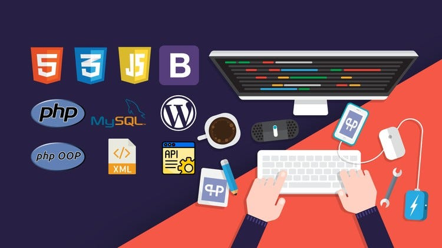

Why I Chose to Fall in Love with Web Development
September 17, 2025 by Jevon Lyons

Hey world, it's Jevon.
If you’re reading this, you’ve found your way to my little corner of the internet.
I figured my first post should be about the "why." Why code? Why web development?
Why spend countless hours staring at a screen, debugging what feels like the same
problem for hours on end?
It starts with a blank screen, a digital void. Then, you type a few lines of cryptic text,
hit save, and suddenly: a headline appears. A button takes shape.
A vibrant gradient background materializes. You’ve literally created something from nothing.
That initial spark of creation is addictive. It’s a feeling I chase every single day.
Building My First Interactive Web App: A Rollercoaster of Emotions
September 16, 2025 by Jevon Lyons

For the past few weeks, I’ve been buried in work. I understood the concepts, variables,
functions, loops in theory. But theory doesn’t build websites. So, I challenged myself:
build a simple interactive app from scratch. No tutorials, just documentation, a lot of
Googling, and pure grit.
Spoiler: It was harder than I thought.I’m still a student. I don’t know all the
frameworks or best practices (yet!). I’ve had my fair share of moments where a missing
semicolon had me questioning my entire life choices. But that’s the beauty of it.
Every error message is a puzzle to solve. Every new concept mastered is a level-up in real life.